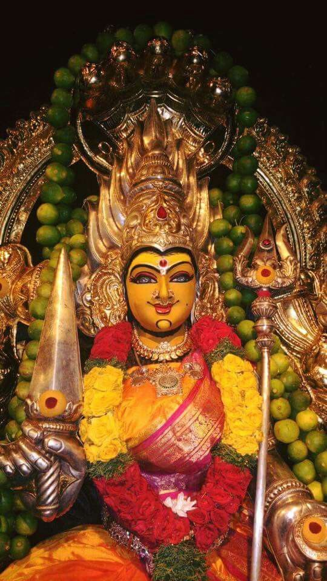
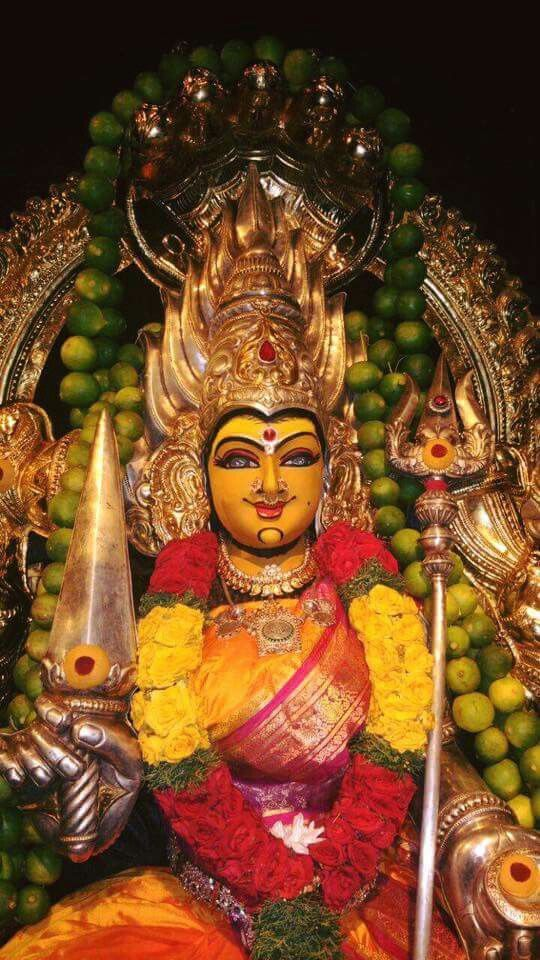
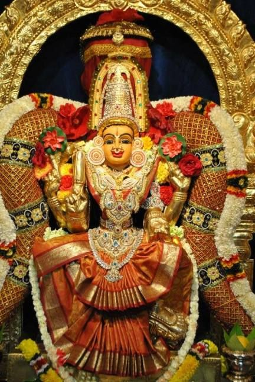
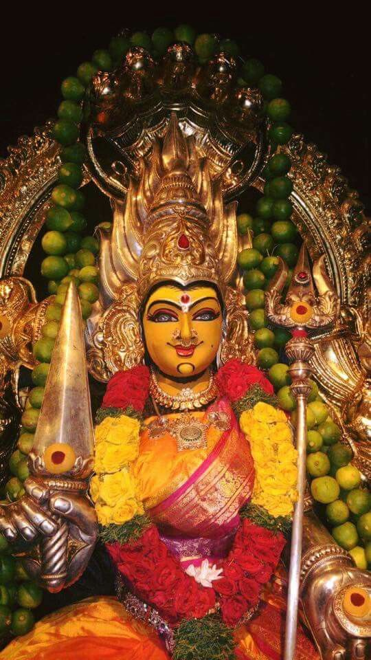
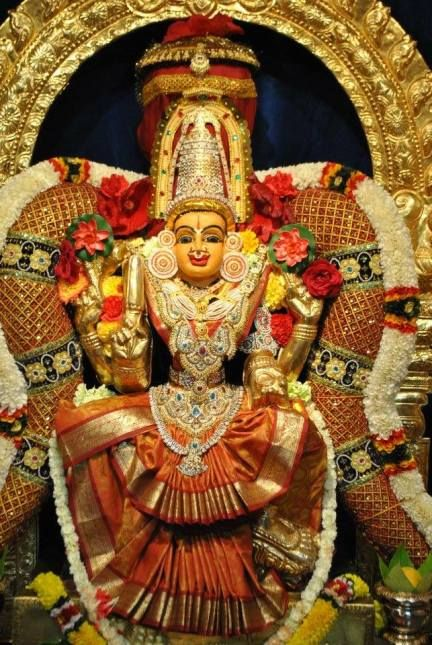
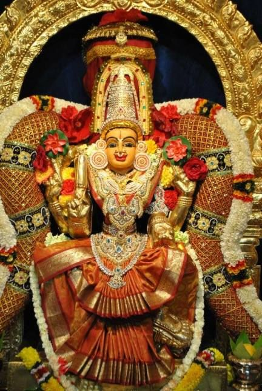
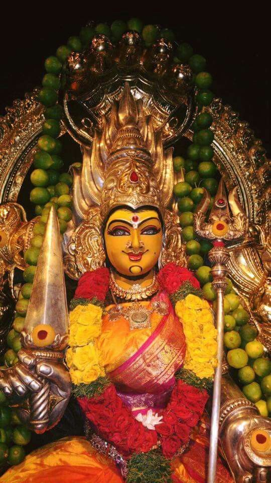
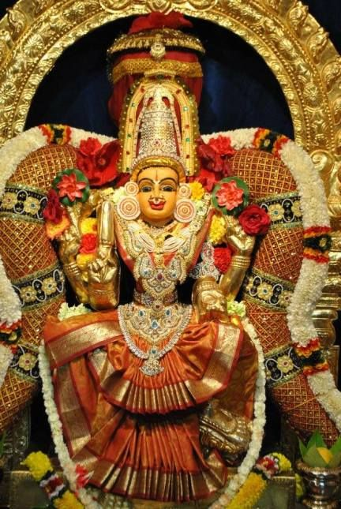

SRI YALLAMMMA DEVASTHANAM
.jpg) 

.jpg) 





Yellamma Temple, also known as Renuka Temple, (Kannada: ರೇಣುಕ ಯಲ್ಲಮ್ಮ ದೇವಿ ದೇವಸ್ಥಾನs) is a temple of Goddess (Devi) Renuka and a pilgrimage destination located about 5 kilometres (3.1 mi) away from the town of Saundatti in the Indian state of Karnataka. It is situated on a hilltop known earlier as Siddhachal Parvat and now known as "Yellamma Gudda", named after the temple. The deity in the temple is the goddess Yellamma or Ellama or Renuka, revered as a fertility goddess.[1][2][3] The temple is associated with the ancient Devadasi practice of dedicating girls to the temple,[4] which the Government of Karnataka claims to have eliminated.[5] The hill, a part of the Sidhachal or Ramagiri hill range which overlooks the Malaprabha river,[6] contains archaeological evidences of occupation dating to the mid-8th to mid-11th centuries of the early Rashtrakuta or late Chalukyan period, and includes megalithic tombs which predate these periods.[2]
The temple was built in 1514 by Bomappa Nayaka of Raybag (Bommappa Nayaka of Raibog).[2] According to archaeological evidence found around the temple, a temple existed here either during the early Rashtrakuta or late Chalukyan period from the mid-8th to the mid-11th centuries. The megalithic tombs found here are dated to a much earlier period. Also seen on the hill are potsherds of early historic redware dated to the 3rd century BC to the 3rd century AD, in addition to megalithic blackware and redware. It is believed that the Yellamma fertility cult was prevalent here even during the Chalukyan period, following their taking possession of this region from the Kadambas of Banavasi.[2] Another place of worship is the sacred "Yogarbavi Satyabamma Kunda" or tank at the lower end of the hill, where devotees bathe and put on new clothes before proceeding to the temple for worship. A notable custom observed here is called "Nimmana", which involves the circumambulation of the "Sathyamma Temple" with neem leaves in their mouths.[6] The temple deity is also known as Jagadamba, meaning "Mother of the Universe" and is believed to be a form of Kali.[7] The temple has been under the management of the Government of Karnataka since 1975. Facilities for pilgrims visiting the temples, like Dharmashalas (free guest houses), health centers, and other basic facilities, have been created by the government.[1]